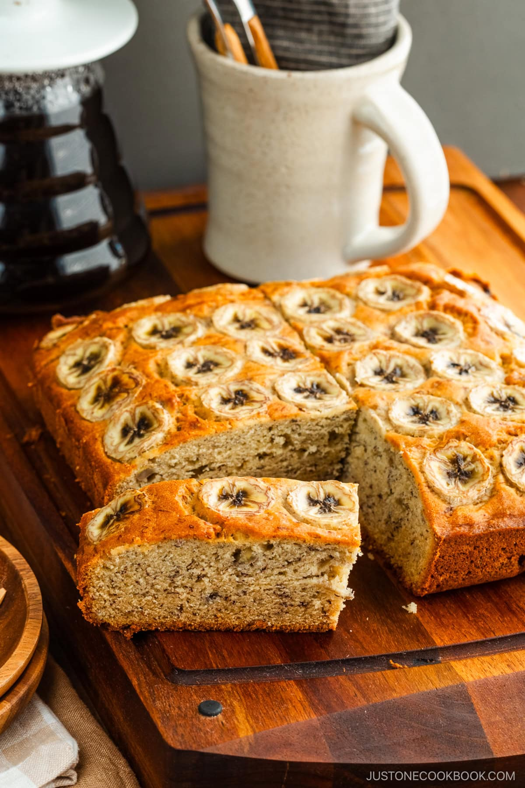

Banana Bread

Description
Banana bread is one of the most classic sweet treats. Sweetened and
moistened with overripe bananas, this dessert gives the allure of a
slightly healthier version of a loaf cake. Dense, but tender, soft,
and moist - it's sure to be a treat whether you're looking for a last
minute quick bake to bring to a get-together, or if you're looking to
savor it all yourself!
This exact recipe comes from the JustOneCookbook blog. It is a recipe
that has been tried a countless number of times. If you're looking for
a gluten-free version, this recipe has proven to be just as good! All
you need to do is replace the recipe's flour with a 1-to-1 gluten-free
flour.
Ingredients
- 200 g all-purpose flour
- 0.5 tsp kosher salt
- 0.5 tsp baking soda
- 0.5 tsp baking powder
- 113 g unsalted butter (softened to room temperature)
- 100g sugar
- 2 large eggs (at room temperature)
- 1 tbsp neutral oil
- 1 tsp pure vanilla extract
- 3 ripe bananas
- 30 g raisins (optional)
Steps
- Gather all the ingredients. The eggs must be at room temperature.
- Preheat the oven to 350°F (180°C). Line a loaf baking pan with
parchment paper.
- In a fine-mesh sieve (or sifter) over a bowl, combine 200 g
all-purpose flour (plain flour), 0.5 tsp baking soda, 0.5 tsp
baking powder, 0.5 tsp Diamond Crystal kosher salt, and sift all
together.
- In the bowl of a stand mixer, beat 113 g unsalted butter
(softened) until creamy.
- Add 100 g sugar and whisk until well blended, fluffy, and pale yellow.
- Add 2 large eggs (50 g each w/o shell) and beat well.
- Using a silicone spatula, scrape the sides and bottom of the bowl
and continue beating.
- Add 1 Tbsp neutral oil and 1 tsp pure vanilla extract. Beat until
well blended.
- Mash 3 ripe bananas and stir to blend with the egg mixture.
- Add the flour mixture to the banana mixture and stir just until
80% blended. Add 80 g raisins at this stage, if you'd like to
include them, and blend for 3 seconds.
- While the white specs of flour are still visible, remove the
mixing bowl from the stand mixer. Using the silicone spatula,
hand-blend the rest of the flour. This will avoid overmixing the
batter.
- Pour the batter into the prepared pan, spreading it evenly with
the silicone spatula.
- Bake at 350°F (180°C) until a toothpick inserted into the center
of the bread comes out clean, about 50-60 minutes.
- Take out the baking pan from the oven and let cool for 45-60 minutes.
Remove the banana bread from the baking pan.
Home